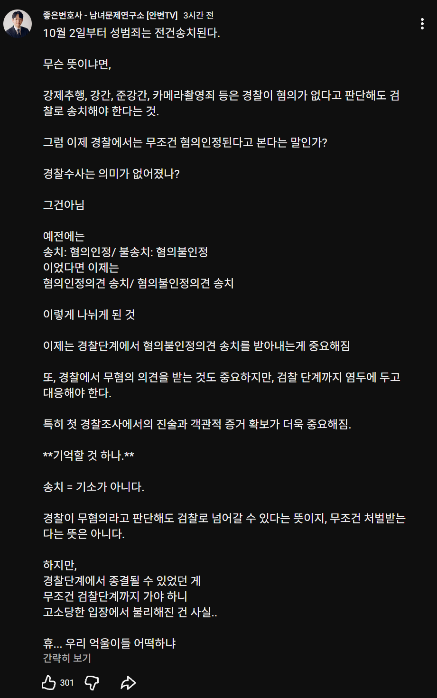

이 시발 꼴등시민새끼들 일단 무조건 송치하고 오~~랫동안 고통받아라 ㅋㅋㅋㅋㅋ
어디 꼴등시민새끼를 불송치하려고 범죄자새끼 만들어야지 ㅋㅋㅋㅋㅋ
범죄자 되기 싫어? 그럼 고통이라도 더받아 ㅋㅋㅋ

이 시발 꼴등시민새끼들 일단 무조건 송치하고 오~~랫동안 고통받아라 ㅋㅋㅋㅋㅋ
어디 꼴등시민새끼를 불송치하려고 범죄자새끼 만들어야지 ㅋㅋㅋㅋㅋ
범죄자 되기 싫어? 그럼 고통이라도 더받아 ㅋㅋㅋ
그래서 도망쳤읍니다.
보추임?
니들이 선택한 나라다ㅋㅋ
검사가 보완수사도 못함ㅋㅋㅋ 병신들ㅋㅋㅋ
극한의 여성 친화 국가 보한민국 ㅋㅋㅋ
보지 좀 털린게 살인급인 나거한 아니노? ㅋㅋㅋ
요즘 물증없이 증언만으로 유죄를 때리는게 제일 문제인듯
검찰 할수있는것도 없는데 굳이 왜저러지? 내수준으론 악의가 있는걸로밖에 안느껴짐
검찰청 없는거 아님? 어디로 감? 진짜 몰라서 그럼
검찰청이 이제 공소청, 중수청 으로 나뉘었는데, 공소청은 말그대로 그냥 기소만 하고 법원으로 넘기고
중수청은 중대범죄(성폭력 등등)들 대상으로 기존 검찰청 역할 한다고 보면 됨
수사, 기소로 분리된거지 없어진게 아님
걍 간판 택갈이
아자잣♡♡
꼬추달고 태어나면 큰 징벌을 받는 나라가 있다
??? : 흔치 않은 일로 갈라치기 말아라 니들이 페미랑 다를게 뭐냐
유의미한 차이가 있지는 않은 거 같은데
전에도 아닌 증거 없으면 유죄로 보는 경향이 강했는데 아닌 증거 확실해서 내사에서 마무리 될 사람들 사건 종결이 늘어지는 거 정도 아닌가
불리해진 게 아니라 절차 지연으로 인해 불편한 거면 몰라도
1등 보지
2등 고양이
3등 외국인
4등 남자
그래도 4등이네
혹시 전교생이 4명인가요?
추가되면 5등 6등 7등으로 밀려나며 영원히 꼴등임 ㅋㅋㅋ
남자 - 아시안게임에서 금메달따고 군대안간다고 한번 비틱질했다가 성인이 됬으면 너가 한 행위를 책임지라며 온 국민에게 개뚜들겨맞고 법 바뀌는중
여자 - 자기대학 남녀공학된다는 찌라시보고 대학시설, 기물들 전부 파괴 범죄저질러도 성인이라도 아직 대학생이고 앞날이 창창하니 용서해주죠? 끝
여론은 페미 성향이 제일 강한 3040 아줌마들도 처벌해야 한다는 여론이었는데 그짝 정당에서 그만 ㅎㅎ
남학생들이 때려부숴났으면 이정도로 안끝나긴했을듯
그럼 삼청교육대 부활함
국가시스템이 정상이 아니야
이제 어차피 누가 성폭행 당했다고 하면 'ㅈㄹㄴㄴ 법원 판결 나오기 전엔 안믿음' 이 기조가 당연시 되고 있어서 진짜 성범죄 당한 피해자 여자들만 불쌍해 지는 거임 특히 나이차이 나는 돈많은 남자랑 성폭행 얘기 나오면 남자가 작업 당했나? 이런생각 안하는 남자 없을 걸?
생각해보니까 그러네 옛날에비해 성폭행 기사나오면 판결나올때까진 안믿음하는사람이 늘어나긴했음
다 쌓여서 치안 좆되고 역풍 존나게 불겠지, 우리 다음세대가 성인 되면, 그 세대가 다 똥물 뒤집어 쓰는거지 뭐
동탄경찰 사건이 일상이되는거냣
스윗들은 아무 문제 없다고 할듯 ㅋㅋ
음? 언제는 경찰 못믿고 검찰이 훨 낫다더니
그건맞지 똘똘이들이 한번더보니까
위글에서 열받는건
불송치도 일방적으로 막은거잖아ㅅㅂ
저 변호사가 지적하는건 경검문제가아님
한줄인데 농도 지리네 ㅋㅋ
한남으로 태어난 걸 후회하게 해주겠다 ㅋㅋㅋㅋㅋ
일단 송치 됐다하면 혐의유무 떠나서 주위에서는 세모눈으로 볼듯ㅋ
공무원은 고소만 당해도 통보감 ㅋㅋㅋ
경우에따라 업무배제도 됨 ㅋㅋㅋ 일단 좆되고 시작하자 ㅋㅋㅋㅋ
또또 장삿속 그득그득한 변호사 새끼 트윗같은 걸로 '팩트체크'하는 거임? 관련된 정책이나 법안 전문 가져와서 샅샅이 체크해다오
니가 찾아와
유튜버 이름도 떡하니 나와있네
성폭력처벌법 제26조의2 라고 나오네 검색하니
그냥 집밖으로 안나가고 살고싶다
아 어짜라고 보댕이 못달고 태어난 한남들아
경찰 권력이 더 커질줄 알았는데 왜 저지랄이 난거지?

나라의 과반수 이상이 뽑았을텐데, 어째 실드가 하나도 없네 ㅋㅋㅋ 이런 글은 흐린눈 해버리는거임?
한녀??? ㅋㅋㅋㅋㅋ 국제결혼 쳐다도 보지 말라고 했다 이민 가지말고 이딴데서 평생 살아라들 ㅋㅋㅋㅋㅋ
한국에 사는 니들이 레전드다 부동산 있어도 월세받고 해외서 살던가하면되지 ㅋㅋㅋ
경찰보다 검찰이 더 낫다던데 송치된들 기소청이 기소 안하겠지.
경찰선에서도 무혐의 같은 일이면 기소할 일은 적을거 같긴한데 그게 100프로가 아니라면 불리해진 것은 맞지않냐?
억울한사람 궁지까지 몰다가 살인사건 나오겠네
규화보전을 연마하는 수 밖에
어이 한국에서 고추를달고 태어낫으면 국방도 같이 책임지라고
누가 한남으로 태어나래?ㅋㅋㅋㅋㅋㅋㅋㅋㅋ